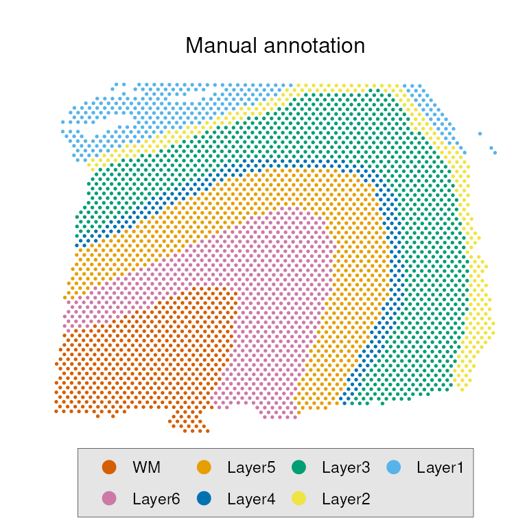
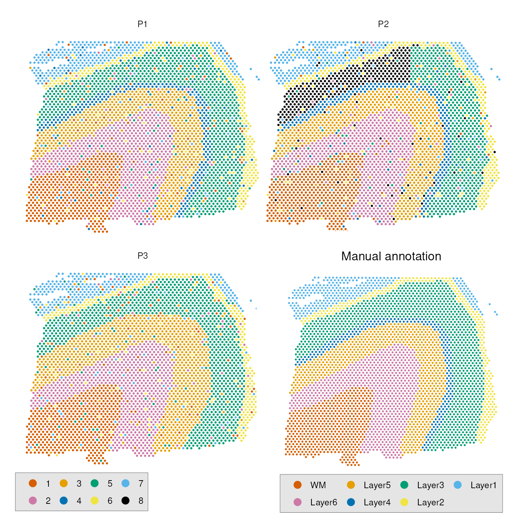

Working with SpatialExperiment
Siyuan Luo
Institute for Molecular Life Sciences, University of Zurich, Zurich, SwitzerlandDepartment of Health Sciences and Technology, ETH Zurich, Zurich, Switzerlandroseluosy@gmail.com
Pierre-Luc Germain
Institute for Molecular Life Sciences, University of Zurich, Zurich, SwitzerlandDepartment of Health Sciences and Technology, ETH Zurich, Zurich, Switzerland2025-01-14
Source:vignettes/PoemOnSpatialExperiment.Rmd
PoemOnSpatialExperiment.Rmd
library(poem)
library(ggplot2)
library(cowplot)
library(SpatialExperiment)
library(STexampleData)
library(dplyr)
library(tidyr)Prepare dataset
my_cols <-c("#D55E00", "#CC79A7","#E69F00","#0072B2","#009E73","#F0E442",
"#56B4E9","#000000")
names(my_cols) <- as.character(seq(my_cols))Our package poem can be easily integrated into a
workflow with SpatialExperiment
objects. Here we use the Visium_humanDLPFC dataset from
package STexampleData
for illustration. Load it:
spe <- Visium_humanDLPFC()
spe <- spe[, !is.na(colData(spe)$reference)]
spe
## class: SpatialExperiment
## dim: 33538 3611
## metadata(0):
## assays(1): counts
## rownames(33538): ENSG00000243485 ENSG00000237613 ... ENSG00000277475
## ENSG00000268674
## rowData names(3): gene_id gene_name feature_type
## colnames(3611): AAACAAGTATCTCCCA-1 AAACAATCTACTAGCA-1 ...
## TTGTTTGTATTACACG-1 TTGTTTGTGTAAATTC-1
## colData names(8): barcode_id sample_id ... reference cell_count
## reducedDimNames(0):
## mainExpName: NULL
## altExpNames(0):
## spatialCoords names(2) : pxl_col_in_fullres pxl_row_in_fullres
## imgData names(4): sample_id image_id data scaleFactorFrom this SpatialExperiment object, we take the location
information (accessible via spatialCoords) and the manual
annotation in colData and store them as a dataframe:
data <- data.frame(spatialCoords(spe))
data$reference <- colData(spe)$reference
data <- na.omit(data)
data$reference <- factor(data$reference, levels=c("WM", "Layer6", "Layer5",
"Layer4", "Layer3", "Layer2",
"Layer1"))The manual annotation looks like this:
p1 <- ggplot(data) +
geom_point(aes(x = pxl_col_in_fullres, y = -pxl_row_in_fullres,
color = reference), size=0.3) +
labs(x = "", y = "", color="", title="Manual annotation") +
theme_minimal() +
scale_color_manual(values = unname(my_cols)) +
theme(
legend.box.background = element_rect(fill = "grey90", color = "black",
size = 0.1),
legend.box.margin = margin(-1, -1, -1, -1),
axis.title.x=element_blank(),
legend.position = "bottom",
legend.box.spacing = margin(0),
axis.text.x=element_blank(),
axis.ticks.x=element_blank(),
axis.text.y=element_blank(),
axis.ticks.y=element_blank(),
panel.spacing.x = unit(-0.5, "cm"),
panel.grid.major = element_blank(),
panel.grid.minor = element_blank(),
plot.title = element_text(hjust = 0.5, size=12,
margin = margin(b = 5, t = 15))) +
guides(color = guide_legend(keywidth = 1, keyheight = 0.8,
override.aes = list(size = 3)))
p1
We then generate some hypothetical domain detection predictions by randomly permuting the manual annotation.
set.seed(123) # For reproducibility
# Given a factor vector representing clustering results, simulate clustering
# variations including merging two clusters and adding random noise.
simulate_clustering_variation <- function(clusters, split_cluster = NULL,
merge_clusters = NULL,
noise_level = 0.1) {
# Convert to numeric for easier manipulation
merge_clusters <- which(levels(clusters) %in% merge_clusters)
clusters <- as.numeric(clusters)
# 1. Merging two clusters
if (!is.null(merge_clusters)) {
clusters[clusters %in% merge_clusters] <- merge_clusters[1]
# Rename both to the same label
}
# 2. Adding random noise
n <- length(clusters)
n_noise <- round(n * noise_level) # Number of elements to replace
if (n_noise > 0) {
noise_indices <- sample(seq_len(n), n_noise) # Random indices to replace
existing_levels <- unique(clusters)
clusters[noise_indices] <- sample(existing_levels, n_noise, replace = TRUE)
# Replace with random levels
}
# Convert back to factor and return
factor(clusters)
}Below we simulate some prediction results with random noise as well as merging or splitting of domains:
# P1: add random noise
data$P1 <- simulate_clustering_variation(
data$reference,
noise_level = 0.1
)
# P2: split Layer 3 into 2 domains, add random noise
data$P2 <- as.numeric(data$reference)
data$P2[data$reference=="Layer3" & data$pxl_col_in_fullres < 8000] <- 8
data$P2 <- factor(as.numeric(factor(data$P2)))
data$P2 <- simulate_clustering_variation(
data$P2,
noise_level = 0.1
)
# P3: merge Layer 4 and Layer 5, add random noise
data$P3 <- simulate_clustering_variation(
data$reference,
merge_clusters = c("Layer4", "Layer5"),
noise_level = 0.1
)If we visualize them:
p2 <- data %>% pivot_longer(cols=-c("pxl_col_in_fullres","pxl_row_in_fullres"),
names_to="prediction", values_to="domain") %>%
dplyr::filter(prediction != "reference") %>%
ggplot() +
geom_point(aes(x = pxl_col_in_fullres, y = -pxl_row_in_fullres,
color = domain), size=0.4) +
facet_wrap(~prediction, nrow=2) +
labs(x = "", y = "", color="", title="") +
theme_minimal() +
scale_color_manual(values = unname(my_cols)) +
theme(
legend.box.background = element_rect(fill = "grey90",
color = "black", size = 0.1),
legend.box.margin = margin(-1, -1, -1, -1),
axis.title.x=element_blank(),
legend.position = "bottom",
legend.justification=c(0, 0),
legend.box.spacing = margin(0),
axis.text.x=element_blank(),
axis.ticks.x=element_blank(),
axis.text.y=element_blank(),
axis.ticks.y=element_blank(),
panel.spacing.x = unit(-0.5, "cm"),
panel.grid.major = element_blank(),
panel.grid.minor = element_blank(),
plot.title = element_text(hjust = 0.5, size=10)) +
guides(color = guide_legend(keywidth = 1, keyheight = 0.8,
override.aes = list(size = 3)))
ggdraw() +
draw_plot(p2 + theme(plot.margin = margin(0, 2, 2, 2))) + # Main plot
draw_plot(p1, x = 0.5, y = -0.01, width = 0.5, height = 0.56) # Inset plot
Calculate external spatial metrics
We can compare P1-P3 to the manual annotation using external spatial
metrics. The getSpatialExternalMetrics() function can
accept either a SpatialExperiment object directly as input,
or separate inputs for true, pred and
location. For example:
colData(spe) <- cbind(colData(spe), data[, c("P1","P2","P3")])
getSpatialExternalMetrics(object=spe, true="reference", pred="P3",
k=6, fuzzy_true = TRUE, fuzzy_pred = FALSE)
## SpatialWH SpatialAWH SpatialWC SpatialAWC class cluster
## 1 NA NA 0.7984473 0.7320190 1 NA
## 2 NA NA 0.8166059 0.7364249 2 NA
## 3 NA NA 0.8602088 0.8144355 3 NA
## 4 NA NA 0.8430965 0.7712156 4 NA
## 5 NA NA 0.8645815 0.8166471 5 NA
## 6 NA NA 0.8619852 0.8169020 6 NA
## 7 NA NA 0.8502012 0.8070391 7 NA
## 8 0.7820273 0.7281400 NA NA NA 1
## 9 0.8834060 0.8552566 NA NA NA 2
## 10 0.6058199 0.5093312 NA NA NA 3
## 11 0.9004540 0.8762669 NA NA NA 4
## 12 0.6953992 0.6189170 NA NA NA 5
## 13 0.6545309 0.5709844 NA NA NA 6is equivalent to:
getSpatialExternalMetrics(true=colData(spe)$reference, pred=colData(spe)$P3,
location=spatialCoords(spe),
k=6, fuzzy_true = TRUE, fuzzy_pred = FALSE)
## SpatialWH SpatialAWH SpatialWC SpatialAWC class cluster
## 1 NA NA 0.7984473 0.7316641 1 NA
## 2 NA NA 0.8166059 0.7362255 2 NA
## 3 NA NA 0.8602088 0.8143229 3 NA
## 4 NA NA 0.8430965 0.7729225 4 NA
## 5 NA NA 0.8645815 0.8163511 5 NA
## 6 NA NA 0.8619852 0.8170221 6 NA
## 7 NA NA 0.8502012 0.8071763 7 NA
## 8 0.7820273 0.7286948 NA NA NA 1
## 9 0.8834060 0.8548135 NA NA NA 2
## 10 0.6058199 0.5095818 NA NA NA 3
## 11 0.9004540 0.8761988 NA NA NA 4
## 12 0.6953992 0.6212056 NA NA NA 5
## 13 0.6545309 0.5704844 NA NA NA 6Dataset level
Let’s first calculate two dataset-level metrics, SpatialARI and SpatialAccuracy:
res3 <- getSpatialExternalMetrics(object=spe, true="reference", pred="P3",
level="dataset", k=6,
metrics=c("SpatialARI","SpatialAccuracy"),
fuzzy_true = TRUE, fuzzy_pred = FALSE)
res2 <- getSpatialExternalMetrics(object=spe, true="reference", pred="P2",
level="dataset", k=6,
metrics=c("SpatialARI","SpatialAccuracy"),
fuzzy_true = TRUE, fuzzy_pred = FALSE)
res1 <- getSpatialExternalMetrics(object=spe, true="reference", pred="P1",
level="dataset", k=6,
metrics=c("SpatialARI","SpatialAccuracy"),
fuzzy_true = TRUE, fuzzy_pred = FALSE)
cbind(bind_rows(list(res1, res2, res3), .id="P")) %>%
pivot_longer(cols=c("SpatialARI", "SpatialAccuracy"),
names_to="metric", values_to="value") %>%
ggplot(aes(x=P, y=value, group=metric)) +
geom_point(size=3, aes(color=P)) +
facet_wrap(~metric, scales = "free") +
theme_bw() + labs(x="Prediction")
Class/cluster level
We can further calculate the class/cluster-level metrics, SpatialAWH and SpatialAWC, to get more insights about the errors our predictions make:
res3 <- getSpatialExternalMetrics(object=spe, true="reference", pred="P3",
level="class", k=6,
metrics=c("SpatialAWH","SpatialAWC"),
fuzzy_true = TRUE, fuzzy_pred = FALSE)
res2 <- getSpatialExternalMetrics(object=spe, true="reference", pred="P2",
level="class", k=6,
metrics=c("SpatialAWH","SpatialAWC"),
fuzzy_true = TRUE, fuzzy_pred = FALSE)
res1 <- getSpatialExternalMetrics(object=spe, true="reference", pred="P1",
level="class", k=6,
metrics=c("SpatialAWH","SpatialAWC"),
fuzzy_true = TRUE, fuzzy_pred = FALSE)
res1
## SpatialAWH SpatialAWC class cluster
## 1 NA 0.7877648 1 NA
## 2 NA 0.8173338 2 NA
## 3 NA 0.7943769 3 NA
## 4 NA 0.8187909 4 NA
## 5 NA 0.7564167 5 NA
## 6 NA 0.8150322 6 NA
## 7 NA 0.7969735 7 NA
## 8 0.7695170 NA NA 1
## 9 0.8721490 NA NA 2
## 10 0.8279055 NA NA 3
## 11 0.5872653 NA NA 4
## 12 0.8990039 NA NA 5
## 13 0.6255869 NA NA 6
## 14 0.6279922 NA NA 7Note that the indices in columns “class” and “cluster” correspond to
the levels of original factors passed to true and
pred. We align them back to the previous factor values, and
then plot them in heatmap:
awh1 <- na.omit(res1[,c("SpatialAWH", "cluster")]) %>%
mutate(cluster = levels(data$P1)[cluster])
awh2 <- na.omit(res2[,c("SpatialAWH", "cluster")]) %>%
mutate(cluster = levels(data$P2)[cluster])
awh3 <- na.omit(res3[,c("SpatialAWH", "cluster")]) %>%
mutate(cluster = levels(data$P3)[cluster])
awh <- cbind(bind_rows(list(awh1, awh2, awh3), .id="P")) %>%
pivot_wider(names_from = cluster, values_from = SpatialAWH) %>%
subset(select = -c(P))
awh <- as.matrix(awh)
rownames(awh) <- c("P1", "P2", "P3")
awh <- awh[,c("1", "2", "3", "4", "5", "6", "7", "8")]
awh <- data.frame(awh)
colnames(awh) <- seq_len(8)
awh$prediction <- rownames(awh)
p4 <- awh %>% pivot_longer(cols=-c("prediction"), names_to="cluster",
values_to = "AWH") %>%
mutate(prediction = factor(prediction), cluster=factor(cluster)) %>%
ggplot(aes(cluster, prediction, fill=AWH)) +
geom_tile() +
scale_fill_distiller(palette = "RdPu") +
labs(x="Predicted domain", y="")
awc1 <- na.omit(res1[,c("SpatialAWC", "class")]) %>%
mutate(class = levels(data$reference)[class])
awc2 <- na.omit(res2[,c("SpatialAWC", "class")]) %>%
mutate(class = levels(data$reference)[class])
awc3 <- na.omit(res3[,c("SpatialAWC", "class")]) %>%
mutate(class = levels(data$reference)[class])
awc <- cbind(bind_rows(list(awc1, awc2, awc3), .id="P")) %>%
pivot_wider(names_from = class, values_from = SpatialAWC) %>%
subset(select = -c(P))
awc <- as.matrix(awc)
rownames(awc) <- c("P1", "P2", "P3")
awc <- data.frame(awc)
awc$prediction <- rownames(awc)
p5 <- awc %>% pivot_longer(cols=-c("prediction"), names_to="class",
values_to = "AWC") %>%
mutate(prediction = factor(prediction), class=factor(class)) %>%
ggplot(aes(class, prediction, fill=AWC)) +
geom_tile() +
scale_fill_distiller(palette = "RdPu") +
labs(x="Annotated domain", y="")
The class-level AWC highlights that in P2, Layer3 has low completeness. This align with our simulation that Layer3 is splitted into 3 clusters in P2. Similarly, the cluster-level AWH highlights that in P3, cluster 3 has low homogeneity, consistent with the merging of layer 4 and 5.
Element level
One can also calculate element-level metric, SPC, for visualization.
res1 <- cbind(getSpatialExternalMetrics(object=spe, true="reference", pred="P1",
level="element",
metrics=c("SpatialSPC"), k=6,
fuzzy_true = TRUE, fuzzy_pred = FALSE,
useNegatives = FALSE),
data[,c("pxl_col_in_fullres", "pxl_row_in_fullres")])
res2 <- cbind(getSpatialExternalMetrics(object=spe, true="reference", pred="P2",
level="element",
metrics=c("SpatialSPC"), k=6,
fuzzy_true = TRUE, fuzzy_pred = FALSE,
useNegatives = FALSE),
data[,c("pxl_col_in_fullres", "pxl_row_in_fullres")])
res3 <- cbind(getSpatialExternalMetrics(object=spe, true="reference", pred="P3",
level="element",
metrics=c("SpatialSPC"), k=6,
fuzzy_true = TRUE, fuzzy_pred = FALSE,
useNegatives = FALSE),
data[,c("pxl_col_in_fullres", "pxl_row_in_fullres")])
cbind(bind_rows(list(res1, res2, res3), .id="P")) %>%
pivot_longer(cols=c("SpatialSPC"),
names_to="metric", values_to="value") %>%
ggplot(aes(x = pxl_col_in_fullres, y = - pxl_row_in_fullres, color = value)) +
scale_colour_gradient(high="white", low ="deeppink4") +
geom_point(size=0.3) +
facet_wrap(~P, scales = "free") +
theme_bw() + labs(x="Prediction", y="", color="SpatialSPC")
This clear highlights the low concordance regions in each prediction as expected.
Calculate internal spatial metrics
When the manual annotation is not available, one can use internal metrics, CHAOS, ELSA and PAS, to understand the domain continuity and local homogeneity for a domain detection result. To illustrate this, we simulate P4 and P5 with 20% and 30% random noise, respectively.
# P4: add 20% random noise
data$P4 <- simulate_clustering_variation(
data$reference,
noise_level = 0.2
)
# P5: add 30% random noise
data$P5 <- simulate_clustering_variation(
data$reference,
noise_level = 0.3
)We calculate the internal spatial metrics for P1-P5. Similarly, the
getSpatialInternalMetrics() function can accept either a
SpatialExperiment object directly as input, or separate
inputs for labels and location. This means
that
getSpatialInternalMetrics(object=spe, labels="reference", k=6)
## the specified variable is considered as categorical...
## class PAS ELSA.Ea ELSA.Ec ELSA CHAOS
## 1 Layer1 0.007326007 0.2260196 0.2429139 0.10180021 0.06097353
## 2 Layer2 0.003952569 0.5953494 0.4400627 0.27340688 0.06049415
## 3 Layer3 0.000000000 0.2097804 0.2622603 0.07659431 0.06041425
## 4 Layer4 0.004587156 0.7103997 0.5492240 0.39000837 0.06047617
## 5 Layer5 0.001485884 0.2765832 0.3196767 0.10032303 0.06042243
## 6 Layer6 0.000000000 0.2048371 0.2132271 0.06345167 0.06041537
## 7 WM 0.001949318 0.1037647 0.1061848 0.03149553 0.06041684is equivalent to:
getSpatialInternalMetrics(labels=colData(spe)$reference,
location = spatialCoords(spe), k=6)
## the specified variable is considered as categorical...
## class PAS ELSA.Ea ELSA.Ec ELSA CHAOS
## 1 Layer1 0.007326007 0.2260196 0.2429139 0.10180021 0.06097353
## 2 Layer2 0.003952569 0.5953494 0.4400627 0.27340688 0.06049415
## 3 Layer3 0.000000000 0.2097804 0.2622603 0.07659431 0.06041425
## 4 Layer4 0.004587156 0.7103997 0.5492240 0.39000837 0.06047617
## 5 Layer5 0.001485884 0.2765832 0.3196767 0.10032303 0.06042243
## 6 Layer6 0.000000000 0.2048371 0.2132271 0.06345167 0.06041537
## 7 WM 0.001949318 0.1037647 0.1061848 0.03149553 0.06041684To calculate the dataset-level metrics:
colData(spe) <- cbind(colData(spe), data[, c("P4","P5")])
internal <-lapply(setNames(c("reference","P1","P2","P3","P4","P5"),
c("reference","P1","P2","P3","P4","P5")),
function(x){getSpatialInternalMetrics(object=spe, labels=x,
k=6, level="dataset",
metrics=c("PAS", "ELSA", "CHAOS"))})
## the specified variable is considered as categorical...
## the specified variable is considered as categorical...
## the specified variable is considered as categorical...
## the specified variable is considered as categorical...
## the specified variable is considered as categorical...
## the specified variable is considered as categorical...
internal <- bind_rows(internal,.id = "prediction")
internal %>%
pivot_longer(cols=-c("prediction"),
names_to="metric", values_to="value") %>%
filter(metric %in% c("ELSA", "PAS", "CHAOS")) %>%
ggplot(aes(x=prediction, y=value, group=metric)) +
geom_point(size=3, aes(color=prediction)) +
facet_wrap(~metric, scales = "free") +
theme_bw() + labs(x="", color="") +
theme(legend.position="None",
axis.text.x = element_text(angle = 45, vjust = 0.5, hjust = 1))
The lower the scores, the smoother the predictions. As expected, the smoothness decrease from P3 to P5 as the noise level increase.
The internal metrics can also be calculated at the element level. For example we can calculate the element-wise ELSA score, which is a score for local diversity and can be regarded as edge detector:
internal <-lapply(setNames(c("reference","P1","P2","P3","P4","P5"),
c("reference","P1","P2","P3","P4","P5")),
function(x){cbind(
getSpatialInternalMetrics(object=spe, labels=x,
k=6, level="element", metrics=c( "ELSA")),
data[,c("pxl_col_in_fullres", "pxl_row_in_fullres")])})
## the specified variable is considered as categorical...
## the specified variable is considered as categorical...
## the specified variable is considered as categorical...
## the specified variable is considered as categorical...
## the specified variable is considered as categorical...
## the specified variable is considered as categorical...
internal <- bind_rows(internal,.id = "prediction")
internal %>%
ggplot(aes(x = pxl_col_in_fullres, y = - pxl_row_in_fullres, color = ELSA)) +
scale_colour_gradient(low="white", high="deeppink4") +
geom_point(size=0.4) +
facet_wrap(~prediction, scales = "free") +
theme_bw() + labs(x="", y="", color="ELSA")
Session info
sessionInfo()
## R version 4.4.2 (2024-10-31)
## Platform: x86_64-pc-linux-gnu
## Running under: Ubuntu 22.04.5 LTS
##
## Matrix products: default
## BLAS: /usr/lib/x86_64-linux-gnu/blas/libblas.so.3.10.0
## LAPACK: /usr/lib/x86_64-linux-gnu/lapack/liblapack.so.3.10.0
##
## locale:
## [1] LC_CTYPE=en_US.UTF-8 LC_NUMERIC=C
## [3] LC_TIME=en_US.UTF-8 LC_COLLATE=en_US.UTF-8
## [5] LC_MONETARY=en_US.UTF-8 LC_MESSAGES=en_US.UTF-8
## [7] LC_PAPER=en_US.UTF-8 LC_NAME=C
## [9] LC_ADDRESS=C LC_TELEPHONE=C
## [11] LC_MEASUREMENT=en_US.UTF-8 LC_IDENTIFICATION=C
##
## time zone: Europe/Zurich
## tzcode source: system (glibc)
##
## attached base packages:
## [1] stats4 stats graphics grDevices utils datasets methods
## [8] base
##
## other attached packages:
## [1] tidyr_1.3.1 dplyr_1.1.4
## [3] STexampleData_1.12.3 ExperimentHub_2.12.0
## [5] AnnotationHub_3.12.0 BiocFileCache_2.12.0
## [7] dbplyr_2.5.0 SpatialExperiment_1.14.0
## [9] SingleCellExperiment_1.26.0 SummarizedExperiment_1.34.0
## [11] Biobase_2.64.0 GenomicRanges_1.56.1
## [13] GenomeInfoDb_1.40.1 IRanges_2.38.1
## [15] S4Vectors_0.42.1 BiocGenerics_0.50.0
## [17] MatrixGenerics_1.16.0 matrixStats_1.3.0
## [19] cowplot_1.1.3 ggplot2_3.5.1
## [21] poem_0.99.4 BiocStyle_2.32.1
##
## loaded via a namespace (and not attached):
## [1] RColorBrewer_1.1-3 rstudioapi_0.16.0 jsonlite_1.8.8
## [4] wk_0.9.4 magrittr_2.0.3 magick_2.8.4
## [7] farver_2.1.2 rmarkdown_2.27 fs_1.6.4
## [10] zlibbioc_1.50.0 ragg_1.3.2 vctrs_0.6.5
## [13] spdep_1.3-6 memoise_2.0.1 elsa_1.1-28
## [16] terra_1.5-21 htmltools_0.5.8.1 S4Arrays_1.4.1
## [19] curl_5.2.1 BiocNeighbors_1.22.0 raster_3.5-15
## [22] s2_1.1.7 SparseArray_1.4.8 sass_0.4.9
## [25] spData_2.3.3 KernSmooth_2.23-24 bslib_0.8.0
## [28] htmlwidgets_1.6.4 desc_1.4.3 cachem_1.1.0
## [31] igraph_2.1.1 mime_0.12 lifecycle_1.0.4
## [34] pkgconfig_2.0.3 Matrix_1.7-0 R6_2.5.1
## [37] fastmap_1.2.0 GenomeInfoDbData_1.2.12 rbibutils_2.3
## [40] aricode_1.0.3 clue_0.3-65 digest_0.6.36
## [43] colorspace_2.1-1 AnnotationDbi_1.66.0 textshaping_0.3.6
## [46] RSQLite_2.3.7 labeling_0.4.3 filelock_1.0.3
## [49] fansi_1.0.6 httr_1.4.7 abind_1.4-5
## [52] compiler_4.4.2 proxy_0.4-27 bit64_4.0.5
## [55] withr_3.0.1 BiocParallel_1.38.0 DBI_1.2.3
## [58] highr_0.11 MASS_7.3-61 rappdirs_0.3.3
## [61] DelayedArray_0.30.1 rjson_0.2.21 classInt_0.4-10
## [64] bluster_1.14.0 tools_4.4.2 units_0.8-0
## [67] glue_1.8.0 dbscan_1.2-0 grid_4.4.2
## [70] sf_1.0-6 cluster_2.1.6 generics_0.1.3
## [73] gtable_0.3.5 clevr_0.1.2 class_7.3-22
## [76] fclust_2.1.1.1 sp_2.1-4 utf8_1.2.4
## [79] XVector_0.44.0 BiocVersion_3.19.1 pillar_1.9.0
## [82] lattice_0.22-6 bit_4.0.5 deldir_2.0-4
## [85] tidyselect_1.2.1 Biostrings_2.72.1 knitr_1.48
## [88] bookdown_0.40 xfun_0.46 UCSC.utils_1.0.0
## [91] yaml_2.3.10 boot_1.3-30 evaluate_0.24.0
## [94] codetools_0.2-20 tibble_3.2.1 mclustcomp_0.3.3
## [97] BiocManager_1.30.23 cli_3.6.3 systemfonts_1.1.0
## [100] Rdpack_2.6.1 munsell_0.5.1 jquerylib_0.1.4
## [103] Rcpp_1.0.13 png_0.1-8 parallel_4.4.2
## [106] pkgdown_2.1.1 blob_1.2.4 scales_1.3.0
## [109] e1071_1.7-9 purrr_1.0.2 crayon_1.5.3
## [112] rlang_1.1.4 KEGGREST_1.44.1